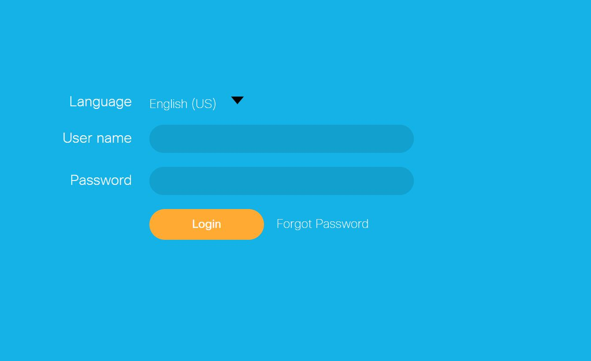
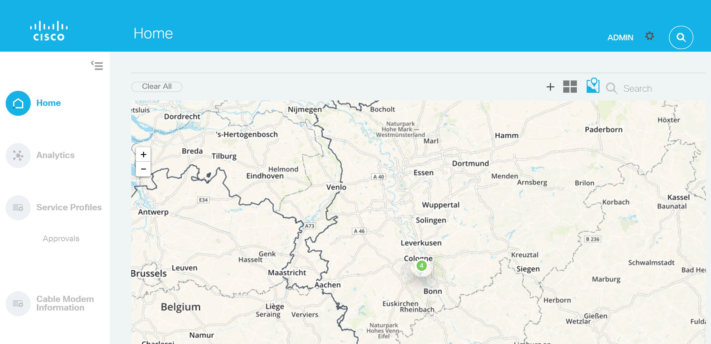
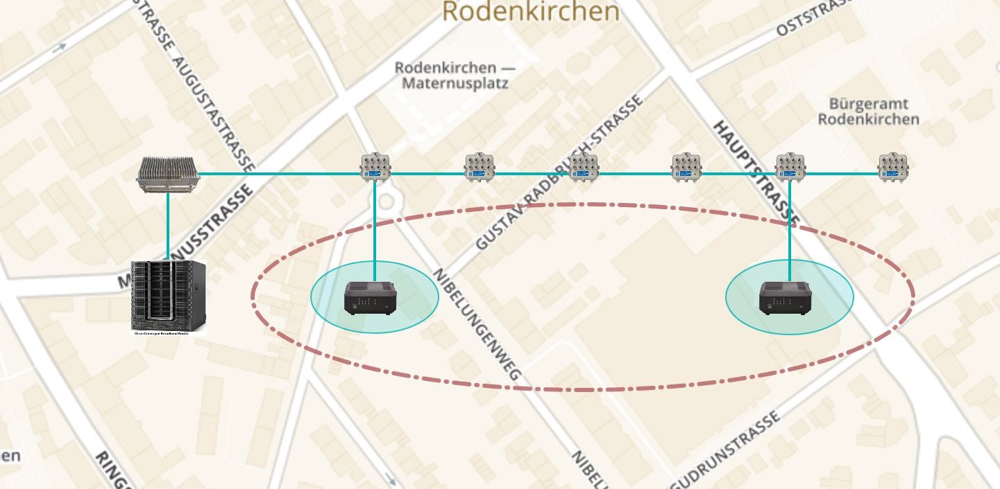
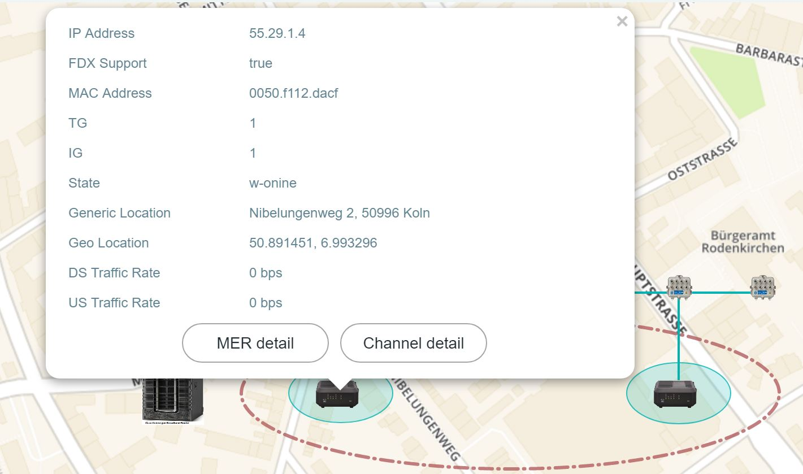
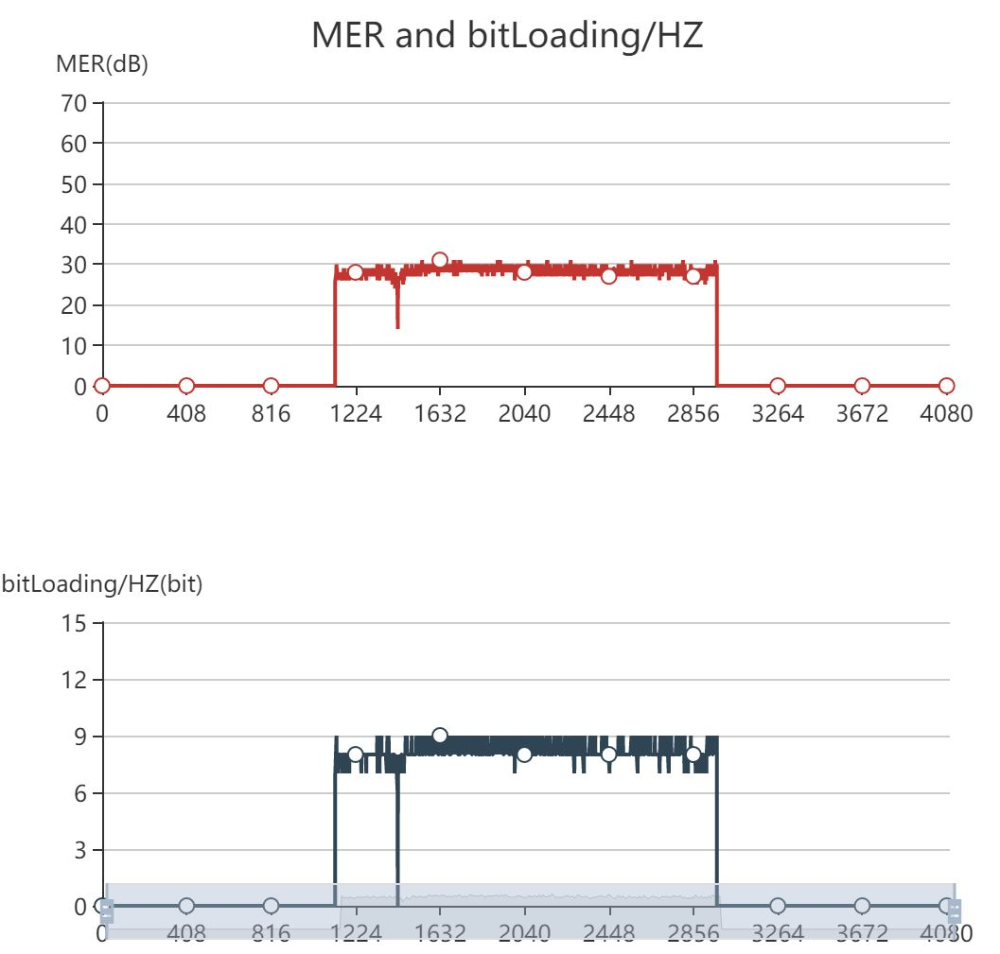

<p>管理系统界面展示</p>
<div class="container">
    <div class="image-slider-wrapper">
        <ul id="image_slider">
            <li></li>
            <li></li>
            <li></li>
            <li></li>
            <li></li>
        </ul>
    </div>
</div>
<p>SVG Demo 可拖拽圆点</p>
<svg id="bewaar_holder" xmlns="http://www.w3.org/2000/svg" style="border: 1px solid black" width="720" height="512" onload="Init(evt)" onmousedown="Grab(evt)" onmousemove="Drag(evt)" onmouseup="Drop(evt)">
    <circle id="circle1" cx="100" cy="100" r="6" stroke="#f60" stroke-width="2" fill="#fff"/>
    <circle id="circle2" cx="600" cy="350" r="6" stroke="#f60" stroke-width="2" fill="#fff"/>
</svg>

<style type="text/css">
.container{
    width:720px;
    height:350px;
    padding:0px;
    /*border:0px solid gray;*/
    -webkit-box-sizing:border-box;
    -moz-box-sizing:border-box;
    box-sizing:border-box;
    background: #fff; 
}
.image-slider-wrapper{
    overflow: hidden;
}
#image_slider{
    position: relative;
    height: 300px;
    padding:0;
}
#image_slider li{
    max-width: 100%;
    float:left;
    list-style: none;
}
</style>

<script>
var SVGDocument = null;
var SVGRoot = null;

var TrueCoords = null;
var GrabPoint = null;
var BackDrop = null;
var DragTarget = null;

var circle1 = null;
var circle2 = null;

var rect1 = null;
var widthRect = null;
var heightRect = null;
var xRect = null;
var yRect = null;

var initXC1 = null;
var initXC2 = null;
var initYC1 = null;
var initYC2 = null;

function Init(evt) {
    SVGRoot = document.getElementById('bewaar_holder');

    circle1 = document.getElementById('circle1');
    circle2 = document.getElementById('circle2');

    var x = circle1.cx.baseVal.value;
    var y = circle1.cy.baseVal.value;
    var width = circle2.cx.baseVal.value - x;
    var height = circle2.cy.baseVal.value - y;
    heightRect = height;
    widthRect = width;
    xRect = x;
    yRect = y;

    createRect(x, y, width, height);
    SVGRoot.appendChild(circle1);
    SVGRoot.appendChild(circle2);

    // these svg points hold x and y values...
    //    very handy, but they do not display on the screen (just so you know)
    TrueCoords = SVGRoot.createSVGPoint();
    GrabPoint = SVGRoot.createSVGPoint();

    // this will serve as the canvas over which items are dragged.
    //    having the drag events occur on the mousemove over a backdrop
    //    (instead of the dragged element) prevents the dragged element
    //    from being inadvertantly dropped when the mouse is moved rapidly
    BackDrop = document.getElementById('rect1');
    console.log(BackDrop);
}

function Grab(evt) {
    // find out which element we moused down on
    var targetElement = evt.target;

    // you cannot drag the background itself, so ignore any attempts to mouse down on it
    if (BackDrop != targetElement) {
        //set the item moused down on as the element to be dragged
        DragTarget = targetElement;
        console.log(DragTarget);
        initXC1 = circle1.cx.baseVal.value;
        initYC1 = circle1.cy.baseVal.value;
        initXC2 = circle2.cx.baseVal.value;
        initYC2 = circle2.cy.baseVal.value;

        // move this element to the "top" of the display, so it is (almost)
        //    always over other elements (exception: in this case, elements that are
        //    "in the folder" (children of the folder group) with only maintain
        //    hierarchy within that group
        DragTarget.parentNode.appendChild(DragTarget);

        // turn off all pointer events to the dragged element, this does 2 things:
        //    1) allows us to drag text elements without selecting the text
        //    2) allows us to find out where the dragged element is dropped (see Drop)
        DragTarget.setAttributeNS(null, 'pointer-events', 'none');

        // we need to find the current position and translation of the grabbed element,
        //    so that we only apply the differential between the current location
        //    and the new location

        var transMatrix = DragTarget.getCTM();

        GrabPoint.x = TrueCoords.x - Number(transMatrix.e);
        GrabPoint.y = TrueCoords.y - Number(transMatrix.f);

    }
};


function Drag(evt) {

    GetTrueCoords(evt);
    // if we don't currently have an element in tow, don't do anything
    if (DragTarget) {
        // account for the offset between the element's origin and the
        //    exact place we grabbed it... this way, the drag will look more natural

        var newX = TrueCoords.x - GrabPoint.x;
        var newY = TrueCoords.y - GrabPoint.y;

        // apply a new tranform translation to the dragged element, to display
        //    it in its new location
        // DragTarget.setAttributeNS(null, 'transform', 'translate(' + newX + ',' + newY + ')');
        if(DragTarget == circle1) {
            DragTarget.setAttributeNS(null, 'cx', initXC1 + newX);
            DragTarget.setAttributeNS(null, 'cy', initYC1 + newY);
        }
        if(DragTarget == circle2) {
            DragTarget.setAttributeNS(null, 'cx', initXC2 + newX);
            DragTarget.setAttributeNS(null, 'cy', initYC2 + newY);
        }

        var xR1 = circle1.cx.baseVal.value;
        var xR2 = circle2.cx.baseVal.value;
        var yR1 = circle1.cy.baseVal.value;
        var yR2 = circle2.cy.baseVal.value;
        var newWidthRect = Math.abs(xR1 - xR2);
        var newHeightRect = Math.abs(yR1 - yR2);
        console.log(yR1)
        if(xR1 > xR2 && yR1 < yR2) {
            newXRect = xR2;
            newYRect = yR1;
        }
        else if(xR1 > xR2 && yR1 > yR2) {
            newXRect = xR2;
            newYRect = yR2;
        }
        else if(xR1 < xR2 && yR1 > yR2) {
            newXRect = xR1;
            newYRect = yR2;
        }
        else {
            newXRect = xR1;
            newYRect = yR1;
        }

        rect1.setAttributeNS(null, 'x', newXRect);
        rect1.setAttributeNS(null, 'y', newYRect);
        rect1.setAttributeNS(null, 'width', newWidthRect);
        rect1.setAttributeNS(null, 'height', newHeightRect);
    }
};


function Drop(evt) {
    // if we aren't currently dragging an element, don't do anything

    if (DragTarget) {
        // since the element currently being dragged has its pointer-events turned off,
        //    we are afforded the opportunity to find out the element it's being dropped on
        var targetElement = evt.target;

        // turn the pointer-events back on, so we can grab this item later
        DragTarget.setAttributeNS(null, 'pointer-events', 'all');

        DragTarget = null;
    }
};

function createRect(x, y, width, height)
{
    var svgNS = "http://www.w3.org/2000/svg"; 
    rect1 = document.createElementNS(svgNS,"rect");
    rect1.setAttributeNS(null,"id","rect1");
    rect1.setAttributeNS(null,"x", x);
    rect1.setAttributeNS(null,"y", y);
    rect1.setAttributeNS(null,"width", width);
    rect1.setAttributeNS(null,"height", height);
    rect1.setAttributeNS(null,"fill","#fff");
    rect1.setAttributeNS(null,"stroke","#000");
    rect1.setAttributeNS(null,"stroke-width","3");

    document.getElementById("bewaar_holder").appendChild(rect1);
}

function GetTrueCoords(evt) {
    // find the current zoom level and pan setting, and adjust the reported
    //    mouse position accordingly
    var newScale = SVGRoot.currentScale;
    var translation = SVGRoot.currentTranslate;
    TrueCoords.x = (evt.clientX - translation.x) / newScale;
    TrueCoords.y = (evt.clientY - translation.y) / newScale;
}


var ul;
var liItems; 
var imageWidth;
var imageNumber;
var currentImage;

function init(){

    ul = document.getElementById('image_slider');

    liItems = ul.children;
    imageNumber = liItems.length;
    imageWidth = liItems[0].children[0].offsetWidth;
    // set ul’s width as the total width of all images in image slider.
    ul.style.width = parseInt(imageWidth * imageNumber) + 'px';
    currentImage = 0;
    slider(ul);
}

/**delta function is to set how the image slide—keep still for a while and move to next picture.
*step function will be called many times until clearInterval() been called
* currentImage * imageWidth is the currentImage position of ul
* delta start from 0 to 1, delta * imageWidth is the pixels that changes
**/
 function slider(ul){ 
    animate({
        delay:17,
        duration: 3000,
        delta:function(p){return Math.max(0, -1 + 2 * p)},
        step:function(delta){
            ul.style.left = '-' + parseInt(currentImage * imageWidth + delta * imageWidth) + 'px';
    },
        callback:function(){
            currentImage++;
        // if it doesn’t slied to the last image, keep sliding
            if(currentImage < imageNumber-1){
                slider(ul);
            }
       // if current image it’s the last one, it slides back to the first one
            else{
                var leftPosition = (imageNumber - 1) * imageWidth;
               // after 2 seconds, call the goBack function to slide to the first image 
                setTimeout(function(){goBack(leftPosition)},2000); 
                setTimeout(function(){slider(ul)}, 4000);
            }
        }
    });
}

function goBack(leftPosition){
    currentImage = 0; 
    var id = setInterval(function(){
        if(leftPosition >= 0){
            ul.style.left = '-' + parseInt(leftPosition) + 'px';
            leftPosition -= imageWidth / 10;
        }
        else{
            clearInterval(id);
        } 
    }, 17);
}

//generic animate function
function animate(opts){
    var start = new Date;
    var id = setInterval(function(){
        var timePassed = new Date - start;
        var progress = timePassed / opts.duration
        if(progress > 1){
            progress = 1;
        }
        var delta = opts.delta(progress);
        opts.step(delta);
        if (progress == 1){
            clearInterval(id);
           opts.callback();
         }
    }, opts.dalay || 17);
}
window.onload = init;

</script>